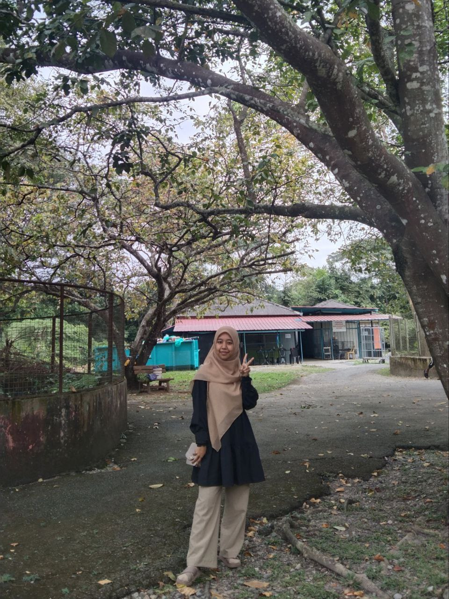

| My Self | My Family | My Friends | Education | Experience | Social Media | Gallery |
|---|
|  | ||
| Name | Nursyahirah binti Shohimi | |
|---|---|---|
| Age | 20 Years old | |
| Gender | Girl | |
| Race | Malay | |
| Nationality | Malaysia | |
| State | Kedah | |
| City | Kuala Ketil | |
| Hobby | Reading a Novel | |
Hi and peace be upon you. First of all I want to introduce myself first. My name is Nursyahirah bt Shohimi. You guys can call me Syahirah. I'm 20 years old and in 4 months I will be 21 years old. My birthday is on March 2, 2003. If you want to give me a gift, you can come to my chat. HAHAHAHA joke joke. I live in a village in Kuala Ketil, Kedah. I am the second child of five siblings. I have 1 older sister, 2 younger sisters and a younger brother. My father's name is Shohimi bin Ramli and my mother's name is Zurina binti Abdul Rahim. My favorite food is spicy kampung fried rice. Usually every morning, I will help my mother prepare breakfast and of course the breakfast prepared is spicy kampung fried rice. Every morning too, we will eat together while talking about some things.
I also have my favourite youtuber and I watched their youtube every night before I sleep